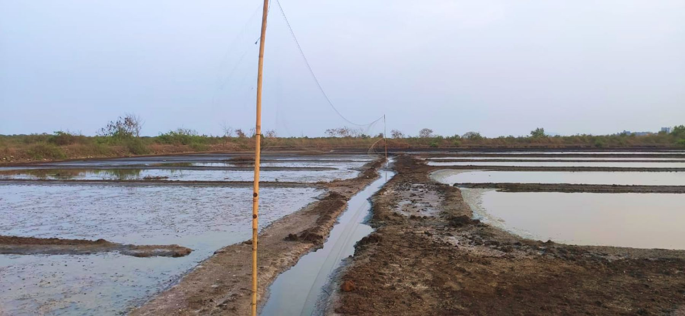
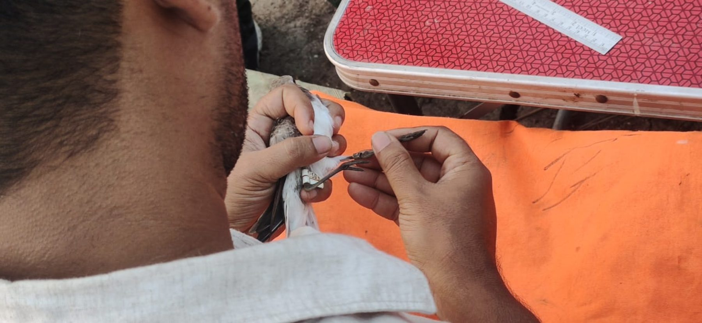
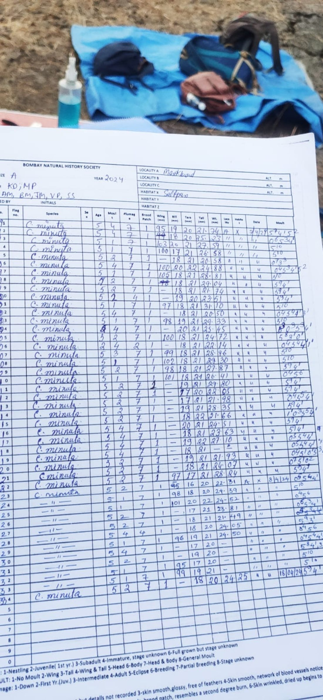
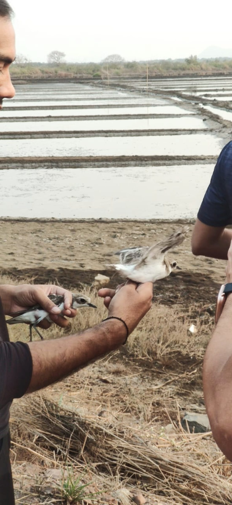
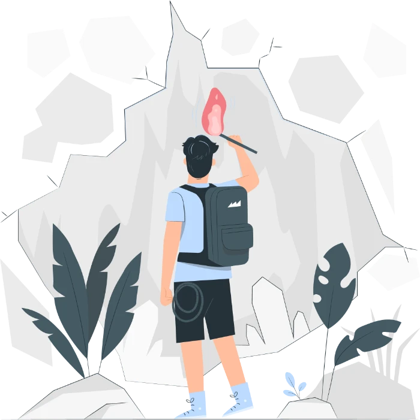
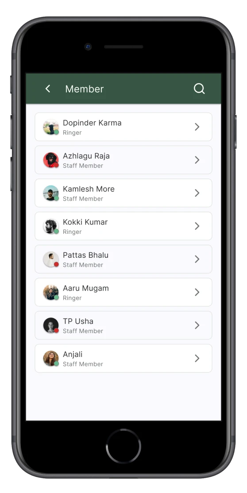
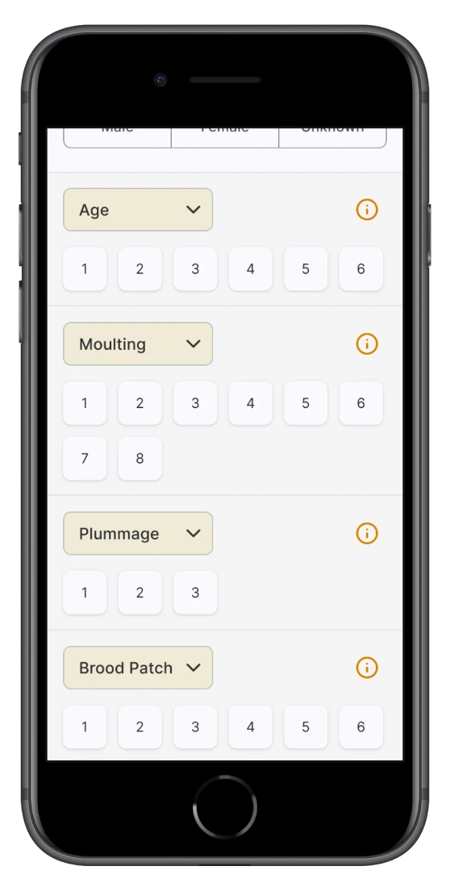
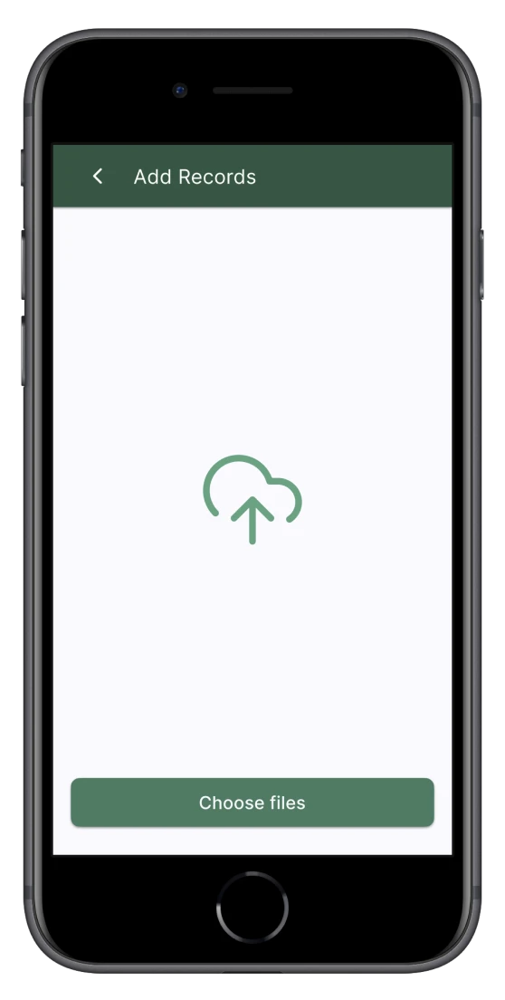
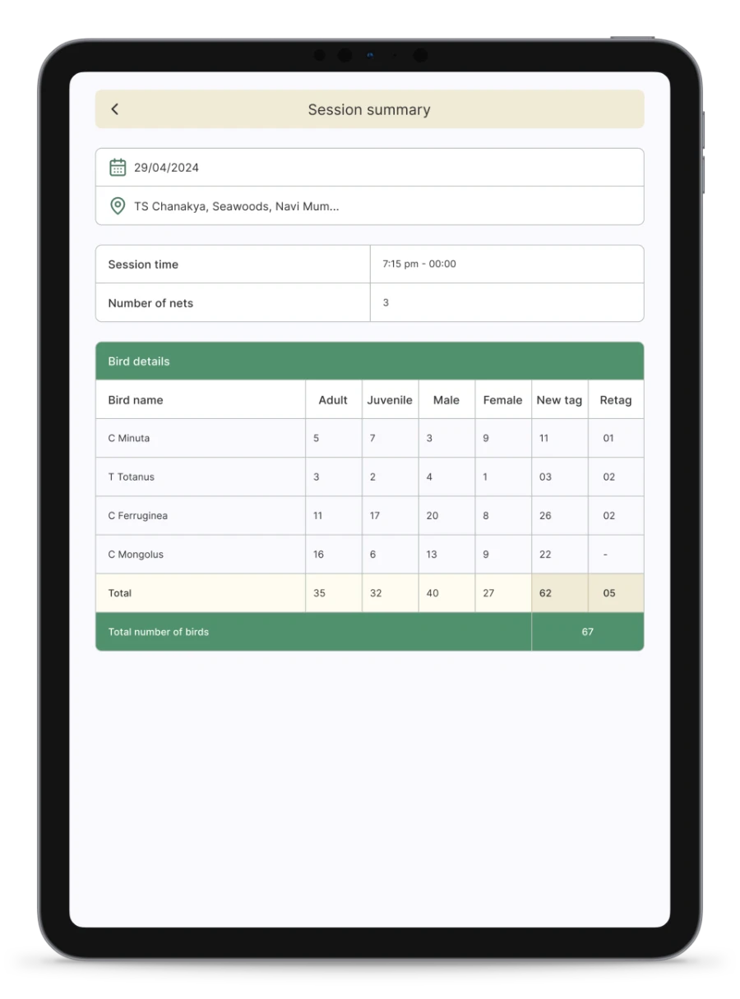

04 · BridaBombay Natural History Society · Bird ringing
Bridging UX withavian conservation.
Brida digitises historical and contemporary bird data for the Bombay Natural History Society (BNHS) — a progressive web app for phone and tablet that makes data collection, management and analysis efficient for conservation and ornithological research.
Ringing teams net, measure, ring and release shorebirds, and every bird has been logged by hand. Three roles share each session — an admin who manages people and records, a ringer who runs the session, and staff members who enter bird data — and each was losing time and accuracy in a different place.

01Mist nets across the saltpan

02Fitting a ring by hand

03The BNHS datasheet it replaces
Problems & pain points by role
Role 01AdminManages people, permissions and records.
Problems
Difficulty managing user permissions and access requests.
Ensuring security and troubleshooting registration issues.
Challenges with remote troubleshooting.
Pain points
Managing user permissions, access requests and security.
Handling technical issues and remote troubleshooting.
Balancing workloads, training users and providing updates.
Role 02RingerRuns the session and owns its data.
Problems
Issues with session management and technical glitches.
Forgetting to stop sessions, causing data inaccuracies.
Balancing data accuracy and speed during fieldwork.
Internet connectivity interruptions during data entry.
Pain points
Dealing with technical issues and connectivity interruptions.
Managing session timing, large data volumes and accuracy.
Coping with stress, app updates and team coordination.
Role 03Staff memberEnters bird data inside a ringer’s session.
Problems
Confusion with session IDs and data entry protocols.
Limited editing options and inconsistent data quality.
Technical difficulties navigating the app.
Pain points
Difficulty accessing sessions and navigating the app.
Limited contribution and unclear data entry protocols.
Device compatibility, distractions and communication challenges.
Problem statements
01User access managementAdmins face delays and risks in managing permissions and ensuring data security.
02Technical issuesFrequent glitches, slow performance and connectivity problems disrupt workflows.
03Data securityConcerns about data safety reduce user trust and engagement.
04Training and supportLack of adequate training leads to low engagement and errors.
05Session managementRingers struggle with timing, causing data inaccuracies and inefficiencies.
06Data accuracyRushed entries and unclear requirements affect data quality.
07CompatibilityDevice and OS issues hinder usability in the field.
08Communication gapsPoor communication delays issue resolution and creates conflicts.
09Data managementLarge data volumes lead to disorganisation and retrieval challenges.
10UsabilityAn unintuitive interface causes navigation difficulties and inefficiencies.
02Research & goals
Listen at the net,count the season.
01Primary research
User interviewsAdmins, ringers and staff members on their experiences, pain points and expectations.
Usability studyTesting functionality in real-world conditions to find workflow and usability issues.
02Qualitative research
ObservationsTeam interactions, fieldwork and app usage in natural settings.
ConversationsInsights from informal discussions about workflows and challenges.
Needs and aimsThe core goals and motivations of each user group.
03Quantitative research
Counting and measuringBirds tagged, sessions conducted and data recorded across a season.
Numerical analysisTask completion times, error rates and session durations.

Ringed, measured, released
Goals by role
AdminSecure access, handled fast
Manage user permissions efficiently for secure, appropriate access.
Streamline registration and promptly handle access requests.
Ensure data security and regulatory compliance.
Provide user training and ongoing support.
Communicate effectively and address concerns swiftly.
Monitor usage and gather feedback for continuous improvement.
RingerSessions that run themselves
Efficiently create and manage sessions for field data collection.
Accurately record session details, including timing and location.
Assign tasks to staff members and keep coordination smooth.
Maintain data integrity through precise entry and session management.
Guide staff members and resolve issues during fieldwork.
Optimise productivity while minimising errors.
Staff memberBird data, right first time
Access sessions effortlessly and input bird data accurately.
Follow data entry protocols for completeness and accuracy.
Collaborate effectively with the ringer and team.
Use training and support resources to work proficiently.
Align with project goals and contribute meaningfully.
Give usability feedback for app enhancements.
03Personas
Four people,one field season.
RingerRajesh Patel38 · Male · Mumbai
“Every bird sighting counts, but managing sessions efficiently is a challenge!”
FrustrationsForgetting to stop session and net times, technical glitches in the app, and feeling overwhelmed by the volume of bird data.
Problem statementRajesh struggles to manage session timing effectively and keep data accurate during fieldwork.
AdminPriya Sharma45 · Female · Mumbai
“Balancing data access and security is like walking a tightrope!”
FrustrationsHandling multiple access requests, staying compliant with data protection regulations, and troubleshooting user issues remotely.
Problem statementPriya struggles to manage user permissions efficiently while keeping data secure.
Staff memberAnjali Desai28 · Female · Bangalore
“Every bird observation adds to our knowledge, but accessing sessions can be a hurdle!”
FrustrationsFinding the correct session ID, feeling limited to data entry, and running into compatibility issues with the app.
Problem statementAnjali struggles to access sessions and contribute bird data accurately.

RingerDeepak Singh32 · Male · Jaipur
“Capturing bird data is exhilarating, but managing it can be overwhelming!”
FrustrationsThe sheer volume of bird data, keeping it accurate under time pressure, and technical glitches in the app.
Problem statementDeepak finds it hard to manage large volumes of bird data efficiently during fieldwork.
04Sitemap & architecture
Mapped by role,before it was drawn.
The sitemap lays out every screen behind the dashboard; the information architecture traces each flow — sign in, sessions, members, requests and settings — down to the individual fields a ringer fills in.
Detailed sitemap
Information architecture
05Key features
Laws of UX,applied in the field.
01 · Admin
Full control, without the clutter
Admins have full control of the application, with user management built on familiar patterns and simplified decisions. They can assign or modify roles effortlessly and step in to do a staff member’s or ringer’s tasks when needed — intuitive navigation, operational flexibility and efficient oversight.
Jakob’s LawHick’s Law

02 · Data entry
Forms built for the net-side
Streamlined forms simplify choices, place controls where hands already are, and group related fields clearly — ring and bird details, then age, moult, plumage and brood patch as one-tap scores. Accuracy goes up, errors go down, and navigation stays seamless.
Hick’s LawFitts’s LawGestalt principles

03 · Historical data
Years of records, in and out
Years of records can be imported and exported as Excel or PDF, centralising data for research. Chunked steps, well-placed actions and a calm visual design keep data management simple and research workflows efficient.
Miller’s LawFitts’s LawAesthetic-usability effect

04 · Session summary
Every session ends with the totals
At the end of each session, users get a comprehensive summary — total birds recorded and session details in a clear table. Organised for readability and returned fast, it makes tracking and data review effortless.
Gestalt principlesDoherty threshold

05 · Mobile & tablet
One form on mobile, two on tablet
The mobile version shows one form at a time for focused input; the tablet shows two side by side to speed up data entry. Layouts adapt, targets stay easy to hit, and both versions remain intuitive and visually consistent.
Brida supports conservation initiatives in coastal and saltpan ecosystems. Real-time, mobile-friendly entry made the field team faster and the data more reliable — and every tagged bird becomes a data point for international migration studies.
5,000+Birds documented each seasonSeptember to May, every year
100–200Birds per session300+ in optimal conditions
50+Shorebird speciesincl. rare and migratory birds
6–8Birds processed per hourat peak, without over-handling
−20%Processing errorswith real-time mobile entry
2,000+Migratory journeys trackedthrough flagging, across continents
Per bird
6biometric measurements — wing, bill, tarsus and more
Per bird
4behavioural indicators — age, moult, plumage and brood patch
Let’s design products people can trust.
Open to product design leadership, zero-to-one systems and complex fintech journeys.